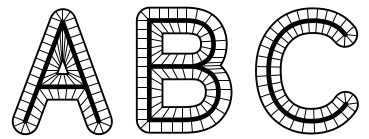

Pierre Albin, Lecture I
Table of Contents
1. History of Topology
Genus of a surface is the number of closed curves that can be removed from it without the surface becoming disconnected.
Examples. Sphere has 0, Torus has 1, etc.
Euler coined the term Analysis Situs for topology, but no further progress was made until Poincare invented the concept of fundamental group when studying the generalized version of genus, called Betti numbers. This later lead to Emmy Noether discovering the existence of homology groups.
Note that Klien defined Topology as the study of invariants under continuous transformations (which Poincare called homeomorphisms). Under this definition, Algebraic Topology is not strictly topology because homotopic equivalence is weaker than homeomorphism. Rather, it comes under geometry, which Klien defined as invariance under symmetries.
2. Basic Definitions
A Topology \(\mathcal{T}\) on a set \(X\) is a collection of subsets of \(P(X)\) such that
- \(\Phi,X \in \mathcal{T}\)
- Closed under finite intersections
- Closed under arbitrary unions
A homeomorphism is a bijection from \(X \mapsto Y\) that is continuous and has a continuous inverse.
To show two spaces are homeomorphic, we need to show there is a homeomorphism between them. OTOH to show two spaces are not homeomorphic, we need to show that there is a topological invariant that is different in both of them.
Some topological invariants are connectedness, compactness, and dimension.
Examples. \((0,1)\cup(2,3)\) and \(\mathbb{R}\) vary in connectedness, \((0,1)\) and \([0,1]\) vary in compactness.
Note that in this course, we will look for algebraic invariants. Moreover, we assume all spaces are topological and all maps are continuous.
3. Example: Retraction Maps

Mathematically, we say homotopy is a collection of maps \(F=\{f_{t}:X\to Y\}\) parameterized by unit closed interval, such that \(F_{t}:X\times[0,1]\to Y\) is a continuous map.
In the diagrams above, we want to ‘shrink’ a thick letter to a thin letter. In general, we want to do so from a space \(X\) to a subspace \(Y\), again continously. In the parameterization here, the range is the thick letter when \(t=0\) and thin letter when \(t=1\). The points in the thin letter stay put, while other points arrive at thin letter with uniform speed.
Another way to view this is that homotopy \(F\) is a collection of functions \(f_{i}\) parameterized by time, each proportionally ‘shortening’ the letter. Note that image of functions is same as that of a collection of paths with same endpoints parameterized by position. This is said to be the adjoint relationship between path and homotopy.
In fact, our example above is a deformation retraction, which is a homotopy equivalence that (when thought of as a curve of functions) goes from identity function \(I_{X}\) to a retraction function \(r:X\to Y\) such that \(f_{t}:X\to X\) is \(Id_{x}\) when \(t=1\), \(r\) when \(t=0\) and \(f_{t|Y}=Id\).
Note that two functions \(f_{i}\) and \(f_{j}\) are said to be homotopic, denoted by \(f_{i} \simeq f_{j}\) if there is a homotopy connecting them.
4. The Mapping Cylinder

Let \(f:X\to Y\) be a function. Then mapping cylinder is \(m_{f}=X\times[0,1] \amalg_{{(x,0)\sim f(x)}} Y\), which is shown in the diagram.
Although this new space is very messy (with no analytical information clear) we can get very important geometric information out of it. In fact,
- \(m_{f}\) has a deformation retraction to \(Y\)
- We have a map \(\pi:m_{f}\to Y\) that acts in two stages on the initial cylinder, from \((x,t)\) to \((x,0)\) and then \((x,0)\) to \(f(x)\). But it takes \(Y\) to \(Y\) via \(Id\). Observe how it acts as deformation via deformed paths of the initial cylinder.
- This shows that any continous map \(f:X\to Y\) can be factored as inclusion \(m_{f}\) followed by \(\pi\), a retraction from a deformation retract.
An example of simplifying complex functions by using complex places. We wouldn’t care about such things as long as the spaces aren’t too complicated.
5. Homotopy Equivalence
Homotopy equivalence is a weaker version of the concept of homeomorphism. Remember that if \(f\) is a homeomorphism, \(f\cdot f^{{-1}}=f^{{-1}}\cdot f=Id\).
A homotopy equivalence is a map \(X\to^{f}Y\) such that \(\exists \space g \space Y\to^{g}X\), \(f\cdot g:Y\to Y\simeq id_{Y}\), and \(g\cdot f:X\to X\simeq Id_{X}\). i.e. Both compositions are homotopic to identity map.
If \(f:X\to Y\) is a homotopy equivalence, we say \(X\) is homotopic to \(Y\) and say \(X\simeq Y\).
When \(X\) is homotopic to a point we say \(X\) is contractible. As far as homotopy is concerned, they are trivial spaces.
6. Cell Complexes
In differential geometry, we want to classify smooth spaces upto diffeomorphism.
In two dimensions, can be done three ways. In three dimensions, we can do it by genus and orientability. In this course, we will also see a generalization of identification spaces for surfaces, called cell complexes
We can get cell complex of a surface by triangulating it and spreading resulting triangles without curvature as efficiently as possible.
Examples. For a torus, it is a rectangle. And for a double torus, an octagon.
But it is staggeringly hard in three dimensions. Even classifying a sphere was called Poincare conjucture and was unsolved for hundreds of years. Although for four dimensions and above it was solved much before.
Also, note that it is in general impossible to classify all shapes of dimension 4 or higher, because it is equivalent to classifying homotopy groups, which is impossible.